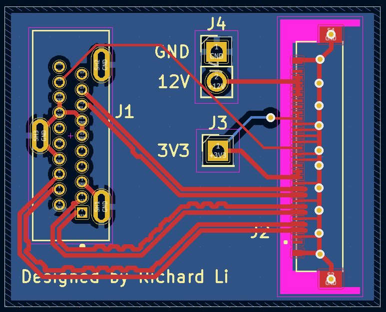
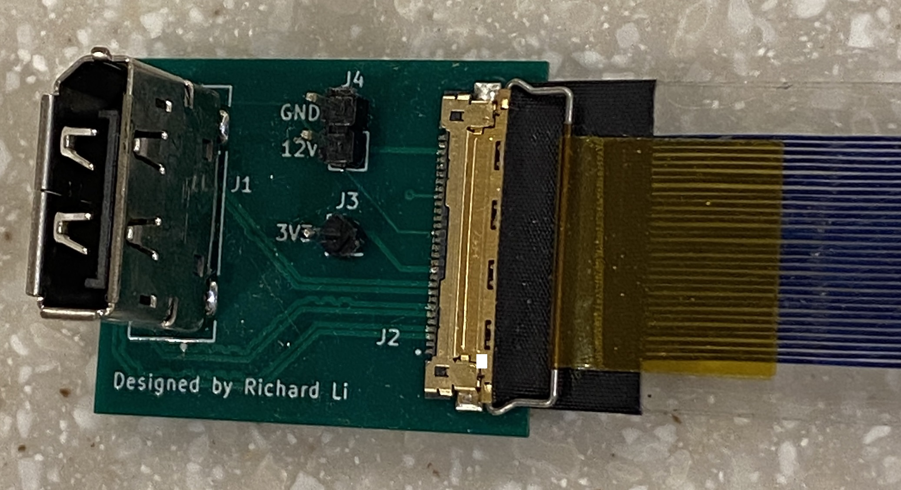
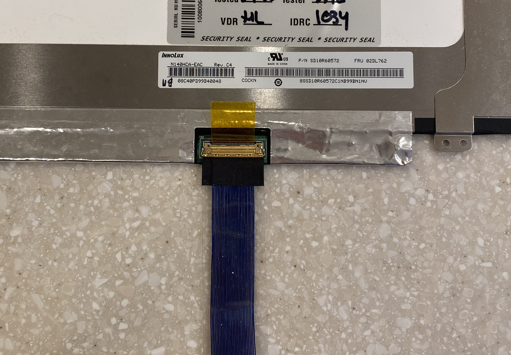

Background: I had an extra laptop display which I wanted to do something with, so I first had to get it to power on and connect to a computer. Since it is a laptop display, only a few laptop models are normally usable with this screen. Devices allowing other computers to connect to this screen are not available for the same reason: this specific screen is only used in a few laptops.
Procedure: Although the physical connector is only found on this screen, the electrical signal carried by the connector is identical to the signal in more common connectors such as Displayport, which I can easily buy adapters for. This makes the PCB significantly simpler. However, since the Displayport signal has a very high frequency, the PCB must be designed very carefully to ensure reliable operation. Special considerations must be taken to minimize electrical interference. The width of the wires on the PCB and the spacing between the wires must be calculated and followed or the signal will be significantly degraded passing through the PCB. The length of each connection must be exactly the same, or the timing of the signals will not be correct, and the screen will not function.
The device was tested by plugging it in. When the power supply was connected, the screen turned on, showing that the connector was wired properly. However, when the cable was plugged in to the computer, the screen did not show anything, although the computer was able to detect the screen and get information about it. This shows that only some of the connections between the computer and screen worked.
Conclusion: I did not continue revising the PCB since I could not identify the specific problem. However, I learned about working with radio frequency signals, which are very common in modern electronics.
Figure 1: Whole board schematic
Figure 2: Board layout
Figure 3: Final product with cable to display connected
Figure 4: Screen with cable to final product

Figure 5: Screen and PCB together